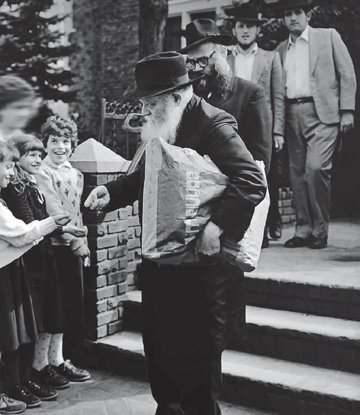

תרגם והביא לדפוס: פ’ זרחי לא מזמן, קיבל הרב אבצן טלפון מאישה שהציגה את עצמה בשם
לא מזמן, קיבל הרב אבצן טלפון מאישה שהציגה את עצמה בשם מלכה (שם משפחתה ופרטים מזהים נוספים שמורים במערכת) וסיפרה על התלהבותה והזדהותה עם הסיפור ותוכנו - “אם הרבי אמר דבר מסוים, גם אם אנחנו רואים בעיני בשר שהדברים הם אחרת, עלינו להבין מה רוצה הרבי ולמה הוא התכוון”, סיכמה מלכה את התרשמותה מהסיפור והוסי
תרגם והביא לדפוס: פ’ זרחי

ההלם, הכאב הכפול, וההחלטה שלא להתגייר
רשות הדיבור למלכה:
כבר בתור תינוקת אומצתי על ידי משפחה יהודיה שומרת תורה ומצוות. הייתי בתם היחידה וזכיתי לגדול ולהתחנך בחינוך יהודי שורשי ומצוין.
כאשר התקרבתי לגיל 12, ועמדתי לקבל עול מצוות, גילו לי הוריי לראשונה שאני בעצם לא בתם הביולוגית, אלא בת מאומצת. למעשה, הוריי המאמצים לא ידעו בדיוק מי הם הוריי ומה מוצאי. באותן שנים, תיקי אימוץ היו נעולים הרמטית, והמידע על מוצאי והוריי הביולוגיים היה סודי וגם לא בר השגה.
לאחר שההלם הגדול התפוגג מעט, הלכנו לרב גדול (שאת שמו אינני זוכרת) שהסביר לי, כי היות והשורש הדתי שלי אינו ידוע, וייתכן כי הוריי הביולוגיים לא היו יהודים, לכן בשלב חשוב זה של החיים, עליי לקבל על עצמי מחדש להיות יהודיה ולקבל על עצמי עול מלכות שמים. כבת המתחנכת בחינוך דתי, הבנתי שההסכמה שלי משמשת כסיום תהליך הגיור.
עניתי לרב שהיות והבחירה ניתנה לי כעת מחדש, אינני מעוניינת לעבור את תהליך הגיור ולהיות יהודיה!
הוריי המאמצים, שאהבתי מאוד ועדיין אהובים עליי גם לאחר פטירתם מן העולם, נדהמו במקצת. ראיתי שהם מוטרדים ומודאגים. הם חשבו כי אולי לא הבנתי את פשר משמעות הדברים, ואמרו לי כי אם לא אסכים להיות יהודיה, בעצם אחשב כגויה. עניתי בנחישות שאין לי בעיה עם זה, היות ואחרי הכל, כנראה ככה הקב”ה ברא אותי…
היום אני יודעת שעמדתי על דעתי בעקשנות בגלל הכעס הרב שהיה בי על הסתרת עובדת היותי מאומצת, עובדה שהתגלתה רק עכשיו; כמו כן על גילוי האפשרות שאני בכלל לא יהודי’ ואני חיה חיי שקר ובגידה כלפי הדת שלי המקורית. הכעס הגדול יותר היה על כך שהוריי הביולוגיים נטשו והפקירו אותי. הרבה מאד רגשות שליליים צפו ועלו באותם ימים.
הוריי המאמצים והרב ניסו לשכנעני, אולם מאמציהם היו לשווא. בסופו של דבר, הרב הציע להוריי שנלך לרבי מליובאוויטש ונבקש את עצתו וברכתו. כך אכן עשינו.
הרבי חושף לפני על הוריי הביולוגים
נכנסנו ל’יחידות’ והרבי שוחח עם כולנו. בשלב מסוים ביקש הרבי לשוחח אתי לבד. הבקשה נראתה לי מוזרה, אולם הוריי הסכימו ויצאו מהחדר. הרבי פנה אלי בעיניו הטובות וגילה לי סוד גדול. הוא אמר לי כי למעשה נולדתי יהודיה להורים יהודיים שאהבו אותי ועדיין אוהבים אותי ממקומם בשמים. הוא הצהיר בנחישות שהם לא נטשו אותי, אלא נהרגו בתאונת דרכים. הוא אמר לי שזה היה רצון ה’, מאיזו סיבה שלא תהיה, שהם ימותו ואני אשאר כאן בעולם. הוא הוסיף שה’ הוא אב היתומים וה’ אוהב אותי באופן מיוחד.
הרבי אמר לי, כי גם אם לא אסכים לעבור את תהליך הגיור ו”להתגייר”, אני עדיין יהודיה 100%, היות ואמי יולדתי הייתה יהודיה בוודאות. אבל, הטעים הרבי, בכל זאת ראוי שאתגייר כי זה מה שההלכה היהודית מורה לעשות במקרים כגון אלה - כיוון שתיק האימוץ סגור ומסוגר, ואין שני עדים שיכולים להעיד על יהדותם של הוריי הביולוגיים. אולם, זה לא משנה את עובדת היותך יהודיה, סיכם הרבי.
דברי הרבי היוו חידוש וזעזוע עבורי, מכיוון שהרב עמו נפגשתי קודם עם הוריי, הצהיר באופן שאינו משתמע לשני פנים, שאם לא אתגייר, אחשב כלא יהודיה. הבנתי שזה פסק הלכה. ואילו כאן גילה לי הרבי שאני עדיין יהודיה.
בהבנתי המוגבלת בגדלות הרבי, באותו זמן חשבתי שהרבי פוסק כך על פי דעה מקלה שמצא בהלכה. וכי כיצד הייתי אמורה להכיר את יכולותיו האלוקיות לדעת את ההיסטוריה שלי כבר בפגישתנו הראשונה, בשעה שאף אחד אחר כלל לא ידע את ההיסטוריה האמיתית שלי?!
הרבי בהבנתו הדקה את נפש האדם, המשיך בשיחתו אתי, וירד לפרטים. הוא אמר לי שהוא יודע שיתכן שלא אאמין לו ואולי אחשוב שזה טריק כדי שאקשיב להוריי להסכים להישאר יהודיה. על כן הוא הוסיף ואמר, שאם אסע לעיר מסוימת (הערת הרב אבצן: מלכה סיפרה לי את המיקום, אולם כדי לשמור על פרטיותה אני משמיט את הפרט הזה), כדאי לי לבקר ב’בית החיים’ היהודי שם ולומר תפילה עבור הוריי שקבורים שם.
כאן ביקש ממני הרבי להבטיח לו שלושה דברים: בכל מקום ובכל מצב לשמור על כשרות המאכלים, לשמור שבת וכן לבקרו פעם בשנה…
יצאתי מחדרו מבולבלת מעט, אולם פחות כועסת. בחדרו של הרבי התחדשו לי כמה דברים, ובראש ובראשונה שהוריי לא באמת נטשו אותי, כפי שהרבי הצהיר. נוכח דבריו, הסכמתי לבסוף “להתגייר”, כי, על פי דברי הרבי, אני ממילא יהודיה, ועלי רק לקבל על עצמי עול מצוות מחדש בשביל האישור הסופי.
רבי, למה??
במשך כל השנים התחוללו בתוכי מאבקים קשים נוכח העובדה שאיבדתי את הוריי בתור תינוקת רכה. היה לי קשה לקבל זאת.
ואז, בתור נערה בשנות ‘העשרה’, שנים מעטות לאחר פגישתי הראשונה עם הרבי, פקד אותי אסון שני. איבדתי את הוריי מאמציי האהובים. הכאב היה בלתי נסבל. התייתמתי שנית!
שוב גלי הכעס איימו לסחוף אותי למצולות. בעקבות האירוע הקשה, התרחקתי הכי רחוק מכל סממן חיים יהודיים שיכולתי. עברתי לגור בעיירה קטנה ללא אוכלוסיה יהודית. למרות זאת, את הבטחתי לרבי שמרתי, והקפדתי על כשרות גם בעיירה נטולת יהודים. הפכתי לצמחונית, ולא צרכתי בשר או דגים. הסתפקתי בפירות וירקות, ביצים ודברי חלב - כולם כשרים, לצד הרבה מוצרים ארוזים - לחמים, מאפים, גבינות שונות וכדומה, שעליהם מופיעים הכשרים לסוגיהם. גם על שבת השתדלתי לשמור, בדרך שלי: לא בישלתי ולא השתמשתי בחשמל. גם לא נהגתי. ניצלתי את השבתות למנוחה, לפעילות גופנית, קריאה והרהור. כך אני שומרת על התחייבותי לרבי: כשרות ושמירת שבת בסיסיים.
שנה אחת, במסגרת ביקורי השנתי אצל הרבי (גם זו הבטחה שהבטחתי לו), עמדתי על המדרכה בקדמת 770, במקומי הקבוע. בחלק מביקוריי הרבי היה מעניק לי הדרכה נוספת בענייני כשרות ושבת, ובחלק מהשנים רק היה מאשר את נוכחותי במבט, בניע ראש ובהנפת יד. זה הספיק לי. באותה שנה, כאשר צעד במהירות, שקית נייר חומה בידו, הוא ירד את שתי המדרגות לעבר המדרכה כדי להיכנס לרכבו שהמתין לו, זעקתי פתאום לעברו מילה אחת: “למה??”
הרבי כמובן הכיר אותי מיד, פנה לעברי ואמר לי בלי להשתהות: (אני לא בטוחה בנוסח המדויק או אם זו היתה כוונתו; זה מה שאני הבנתי). “הורייך הביולוגיים היו אנשים טובים, אולם, ללא אשמתם היו לא שומרי תורה ומצוות. גם ה’ הינו שותף בבריאתך; גם הוא הורה שלך. הוא אוהב אותך וידע שנשמתך זקוקה לאוכל כשר ושבת. ולכן, במשך שנות התפתחותך הפקיד אותך אצל הורים מאמצים שנתנו לך מזון כשר ושמירת שבת, כדי להזין את נשמתך. לכן את חייבת לקיים את הבטחתך לאכול רק כשר ולשמור שבת”.
הרבי אמר זאת ונכנס למושב האחורי של רכבו ונסע. כל הדו–שיח ערך בין 20–15 שניות, אבל זה הרגיש לי כשעה.
תיק האימוץ גילה: הרבי ידע הכול!
שנים רבות חלפו, המדיניות השתנתה והצלחתי להשיג את מסמכי לידתי שהיו עד כה חסויים ונסתרים מעיני איש. בדיוק כמו שהרבי אמר לי לפני שנים ארוכות - התברר כי שני הוריי היו יהודים וכן שניהם נקברו בבית החיים היהודי בעיר ההיא, כפי שאמר לי הרבי בעבר… ככל הנראה שניהם נהרגו באותו יום, בתאונת דרכים, כאשר הייתי תינוקת.
אני מצדי קיימתי את ההבטחה שלי לרבי, ועדיין שומרת כשרות בסיסית ושמירת שבת בסיסית. כפי שיעץ לי, אני גם מבקרת מדי פעם את קברי הוריי הביולוגיים באותו בית עלמין.
כאשר הייתי בחדרו של הרבי, כמובן לא יכולתי להבין מהיכן ידע הרבי את כל האינפורמציה על הוריי ומשפחתי. היום אני יכולה להסתכל על הדברים בגישה רחבה יותר. הרבי יש לו ידיעה בכל מה שנמצא בעולם הזה ובעולם הבא! לרבי זה כל כך פשוט וברור, כמו לקרוא תמרור. בהביטו בי, הוא פשוט זיהה אותי ואת שורשי נשמתי. הוא ידע עלי הכל בוודאות. הוא ידע שלא ננטשתי על ידי הורים בלתי אחראיים (שזה מה שהאמנתי). הוא ידע כיצד הוריי נפטרו והיכן בדיוק הם קבורים ואף את מצבם בשמירת תורה ומצוות. אצלו ‘פאזל’ הנשמה שלי, היה מושלם - הוא ידע מדוע ה’ גרם לי להתייתם, למה משמים גלגלו שדווקא הורים שומרי תורה ומצוות יאמצו אותי, ולמה זה חייב להיות כך ולא אחרת! הוא יודע מדוע ה’ עושה את מה שהוא עושה, ומסביר כאשר יש צורך בהסבר.
כשאני חושבת על כל זה, אין בזה היגיון אנושי וגם לא אינטליגנציה אנושית, אלא ידיעה של מימד אחר ממה שאנו חושבים, רואים או מבינים. זה סיפור של רבי שיש לו גישה חופשית אל המימד האלוקי.
מסרים סמויים באמצעות מצה שמורה
לאחר מכתבה של מלכה, הגיב לה הרב שלום דובער אבצן במכתב משלו, ובין השאר הציע לשלוח לה מצה שמורה לליל הסדר. כעבור שעות אחדות הוא קיבל מייל חוזר:
מעניין שהצעת זאת, ואני אכן מוסיפה ‘מצה שמורה’ להתחייבותי לרבי לאכול מזון כשר.
אולי אתה תמה מדוע הסכמתי כל כך בקלות, אך למעשה, זה מה שהרבי נהג לעשות. בכל שנה, הוא חידד אצלי את שתי המצוות העיקריות שקיבלתי על עצמי: כשרות ושבת. שנה אחת הוא אמר לי שכדי שהאוכל יהיה כשר לגמרי, עלי לברך לפני האכילה. בשנה נוספת הוא אמר שעל מנת לברך כהוגן, עליי ליטול ידיים “נעגעל וואסער”. בשנה אחרת הוא אמר לי שלא ראוי לאכול לפני שאתפלל.
המזון העיקרי שלי היה אורז מבושל, ולא גיליתי את זה לרבי, אבל הוא ידע בכל זאת. איך ידע? הוא ידע הכל… שנה אחת הוא שאל אותי מה אני מברכת על האורז המבושל? עניתי שבמדריך לברכות הנהנין כתוב לברך “מזונות”, באותו רגע הוא חייך אליי חיוך ענק, ואז הציע שהיה עדיף שאברך “שהכל”. בשנה אחרת הוא אמר שכדי להיות כשר לגמרי, עלי לטבול את הכלים בנהר ליד ביתי… בשנה נוספת אמר שכל אוכל ומשקה שאוכלים ביום כיפור, הוא אינו כשר. בפעם אחרת הוא אמר שלא ראוי לסעוד לפני הדלקת נר חנוכה.
כמעט בכל שנה הוא שכלל את התחייבותי לשמירת שבת וכשרות, תוך קשר והוספת מצוות נוספות. כל דו–שיח לקח לא יותר מכמה שניות. לכן, להצעתך כעת, אני מוסיפה את המצה השמורה כחלק מההתחייבות לאכול מזון כשר.
המצה, מזכירה לי סיפור נוסף שהיה לי, הקשור לרבי:
היה זה כעשר שנים לאחר פטירתם של הוריי המאמצים ולאחר החלטתי לעבור דירה רחוק ככל שניתן. יום אחד הופיע רב על מפתן ביתי בכפר בו התגוררתי ושאל אותי אם אני יהודיה. הייתי בהלם. הגעתי למקום הזה כי רציתי שלעולם לא ימצאו אותי, אבל עניתי את האמת: “כן!” ואז שאלתי את הרב: “איך אתה יודע?”
הוא אמר לי שיש לו חבילה קטנה עבורי מהרבי ובה מצות. הוא סיפר, שהרבי אמר לו להביא את המצה לכפר הזה, ולתת אותה ליהודי היחיד שגר שם. הוא לא קיבל שם, כתובת או כל מידע רלוונטי אחר, אולם כחסיד הרבי, הוא קיבל על עצמו את השליחות ויצא כדי לבצעה בצורה הטובה ביותר.
כולי תמיהה שאלתי: “איך מצאת אותי, ומדוע אתה חושב שאני האדם היהודי שאתה מחפש”?
השליח סיפר, כי בהגיעו לכפר, החל לחקור את תושבי הכפר לגבי קיומם האפשרי של יהודים בכפר. כמעט כל אחד שנשאל על ידו ענה שאין אף יהודי בכפר, שכן לא אמרתי לאף אחד שאני יהודיה. לבסוף פגש במספר אנשים שהצהירו שהם חושדים שיש אפשרות שאני יהודיה, כי אני האדם היחיד בקהילה שלא הולך לבית תיפלתם.
מה ש”מצחיק” הוא, שתמיד הוזמנתי להצטרף לשכניי ולבקר במקום הזה. הלחץ החברתי החל לצבור עוצמה, ואני כבר החלטתי בלבי שביום ראשון הבא אשתתף בטקס בבית התיפלה כדי להתאים לשאר תושבי העיירה. להרגשתי זה לא היה משמעותי; אני יהודיה וכזו אהיה תמיד. לבקר מפעם לפעם בכנסיה למטרה חברתית ולא כאקט דתי, כך חשבתי לעצמי, לא ישנה את מהותי היהודית.
זה היה בדיוק באותו שבוע שהחלטתי ללכת לבית תיפלתם ביום ראשון הקרוב. היה זה כשבוע לפני פסח - ובדיוק אז הופיע הרב בביתי.
בואו נתן לי חומר רב למחשבה מעמיקה: הדרך היחידה שהרב מצאני - והסימן היחיד שאני יהודיה הוא שאני לא הולכת לתיפלה. האם אני באמת רוצה לוותר על הסימן הזה?? אם אני הולכת לשם אני מאבדת משהו ענק: זהותי כיהודיה בעיירה זו. כן, זה ישנה את המצב, ובגדול!
באותו רגע החלטתי לשמר את זהותי והסימן ליהדותי, ולעולם לא להיכנס עוד לבית תיפלתם. הייתה זו הפעם היחידה שקיבלתי משהו מהרבי; הוא ידע שאני זקוקה לזה באותו רגע, והוא שלח לי מסר שהוא שומר ומשגיח עלי, גם מרחוק.
כשחשבתי על כך לאחר מכן, הבנתי שהמיוחד בשליחות זו אליי, היא בשני רבדים: אם הרבי היה מבקש מהשליח להעביר את המצה אליי לפי שמי (והרבי הרי ידע למי זה אמור להגיע!), לא הייתי זוכה לקבל את המסר החשוב האמור. הייתי אמנם שמחה שהוא שלח לי מצה, אבל לאו דוקא שהייתי מסיקה שהמצה יש בה מסר שלא להשתתף בהתכנסות הכנסייתית. שנית, הוא נתן לי להגיע לתובנה לבד בלי להגיד לי זאת ישירות. היתה זו החלטתי האישית, לא של הרבי. עד היום, עשרות שנים לאחר מכן, אני מקיימת את ההחלטה.
אגב פסח, אני זוכרת שחודשים ספורים לאחר פטירת הוריי המאמצים, זמן קצר לפני חג הפסח, ביקרתי את הרבי. הרבי הזכיר לי את הבטחתי לשמור שבת, ולכן גם ביום טוב אסור לי לעשות מלאכות האסורות בשבת.
אמרתי שההבטחה היתה רק לשבת ולא ליום טוב! יום טוב לא היה כלול בהבטחה.
הרבי חייך ואמר (בערך) שגם יום טוב נקרא שבת.
חשתי שהרבי “לא הוגן” בנוגע להסכם שלנו, ושאלתי בספקנות: “ממתי?” והרבי ענה לי בערך כך: אנו מתחילים לספור ספירת העומר “ממחרת השבת”. את רואה, התורה מכנה יום טוב בשם “שבת”. על כן, את צריכה לקיים את הבטחתך להימנע ממלאכות אסורות גם ביום טוב.
הרבי דרש בדרכו שלו; ברכות, בעדינות אך בנחישות. תבע והתעקש. הרבי לא השאיר אופציות פתוחות, ולא היו פשרות. וכמה שאני עקשנית, הרבי תמיד ניצח אותי ב”עימות”.
הרבי איבחן: סיבת המיגרנה - מוזיקה לא–יהודית
פעם, באחת פגישותיי עם הרבי ליד המדרגות בקידמת 770, הייתי מאוד חולה. סבלתי מכאבי ראש חמורים מסוג מיגרנה וסינוסיטיס גם יחד. בנוסף, סבלתי מכאבי אוזניים קשים מאוד. לפעמים הכאב היה כה חזק, שכלל לא תפקדתי. ניגשתי לטיפולים רפואיים מקצועיים ונטלתי תרופות, אולם כל זה לא הועיל. הרופאים החלו לחשוש שמקור הכאב רציני יותר, ודאגו לחיי.
שיתפתי את הרבי במצבי, והוא אמר שמוזיקה לא–יהודית יכולה לפגוע קשות בנשמה רגישה, ולעיתים זה יכול להתבטא במחלה פיזית. לא סיפרתי לפני כן לרבי שאני נהנית מאוד מהאזנה למוזיקה פופולארית, לא–יהודית, לפעמים במשך שעות ברציפות. זה השרה עלי רוגע והיה מענג ומהנה.
כדי לברר את כוונת דברי הרבי, שאלתי: האם הרבי מתכוון שאאזין למוזיקה יהודית, חסידית או חב”דית באופן בלעדי? הרבי ענה שהאזנה לניגוני חב”ד הינו כתרופה לגוף ולנפש (אני לא בטוחה שאלו היו מילותיו המדויקות, אולם זו היתה המשמעות, וכך הבנתי אותו).
מאז פסקתי לחלוטין להאזין למוזיקה לא–יהודית, והחלתי להאזין בדבקות לניגוני חב”ד פעם בשבוע או יותר.
זמן קצר לאחר שחוללתי את השינוי, הכאבים נעלמו. כל הטיפולים והתרופות שלקחתי עד כה, הועילו אולי במקצת, ואפשר שבכלל לא. ההימנעות שלי מהאזנה לשירים לא–יהודיים, והאזנה לניגוני חב”ד, היו התרופה שמיגרה את המחלה.
הרבי מתכנן לפרטים את המשך חייה של מלכה
את סיפורה של מלכה, פרסם הרב אבצן באתרי חב”ד באנגלית, ובעקבות כך זרמו תגובות רבות של גולשים. מלכה קראה אותן בתשומת לב, ובמוצאי שבת פרשת ויקרא (תשע”ז) השיבה למגיבים כולם:
מה כל כך מסעיר בסיפורי? כפי שכתבתי, לא אירעו ניסים מיוחדים בסיפורי. דבריי לא היו אלא הערכה והוקרה קטנה לאישיותו של הרבי. סיפורי הוא סיפור פשוט שמשתף בתובנות שהגעתי אליהן, כיצד הרבי יודע הרבה יותר מכל מה שאדם נורמלי מסוגל להשיג. רציתי להמחיש כיצד לרבי יש גישה חופשית למידע אלוקי.
אולם, לא זה הסיפור! זה סיפור של חמלה אנושית של הרבי ליתומה. זה סיפור של גילוי מידע המוסתר מרוב בני האדם, באוזניה של יתומה במטרה לרכך את הכאב ולעזור לה לקבל החלטות נכונות להמשך חייה.
במחשבה נוספת אני חושבת שגם זה לא הסיפור האמיתי! עבורי, זה סיפור של הראיה מרחיקת–הלכת של הרבי, ראיה בתכנון חייה של ילדה בת 12. הרבי ראה לפניו את כל חיי - עבר, הווה ועתיד. הוא צפה שאהיה מרדנית (האם זה לא מוזר שהרבי מבקש מילדה שגדלה ומתחנכת בבית שומר תורה ומצוות להתחייב לשמור “רק” על כשרות ושבת?) היו לו את החכמה והחזון לערוך ‘תכנית עבודה’ עבורי כדי שאשאר קשורה בעתידי לשבת וכשרות, וכן גם להישאר קשורה אתו כדי שהוא אישית יוכל לפקח ולעקוב אחרי ולשפר את ההתחייבויות שלי.
תכניתו ממשיכה גם עד היום הזה!
אני מרגישה שבפורים האחרון הוא דאג למצוות משלוח מנות שלי, כאשר העביר לי מסר (באמצעות ספרו שכתב לפני שנים רבות [ליקוטי שיחות חלק ב’ עמוד 537]) לשלוח “חתיכת עוגה ומי סודה”. זה חלק מהחיזיון והראיה למרחוק של הרבי.
אני מרגישה שהוא שלח את שלוחיו, אותך [הרב אבצן - פ.ז.] ואת הרב רסקין, להדריך אותי לקבוע עירוב כשר. זה לא צירוף מקרים - זה חלק מהראיה של הרבי לרחוק. אבל הכל חלק מהראיה למרחוק של הרבי, שערך תכנית כבר לפני שנים, לייעץ, להדריך ולסייע ולדאוג ליתומה מרדנית.
אינני יודעת מה מצפה לי בעתיד. אני מאמינה שהרבי כן יודע.
מלכה
מסר אישי לקוראים
במסגרת חלופי המיילים של מלכה עם הרב אבצן, ופרסום סיפוריה, ביקשה גיבורת הסיפור להוסיף “מסר אישי לקוראים”:
סיפור ללא מסר הינו הזדמנות שאבדה. בזמננו אני שומעת שישנם צעירים רבים שכועסים ומאוכזבים, מרגישים נבגדים מטראומה אמיתית או מקרה שנחווה על ידם כטראומה. הצעירים האלה נאטמו רגשית, ובחרו למרוד. בעקבות זאת, הרבה “יורדים מהדרך”, צמד מילים שאני קוראת הרבה, וחיים חיי הרס והתאבדות עצמית בגשמיות ורוחניות.
הייתי שם, וגם אני עשיתי את זה.
אם יש מישהו כועס - זו אני. התייתמתי פעמיים - הן מהוריי הביולוגיים שלא הספקתי כלל להכיר, וכעבור שש עשרה שנה מהוריי המאמצים שכה אהבתי. היה לי עוגן אחד שקשר אותי ליהדותי - הביקורים השנתיים שלי אצל הרבי. אולם, כאשר האפשרות לראות את הרבי נלקחה ממני, איבדתי גם את העוגן הזה.
כנערה ויתרתי על חלקים ביהדותי ובחרתי לגור במקום ללא יהודים. אולם, אני ממשיכה להיות קשורה לרבי כפי שהבטחתי לו ומבקרת כל שנה בקברי שני זוגות הוריי, ואני שומרת שבת וכשרות כפי שהבטחתי לרבי לפני שנים רבות (כעת אני עוסקת בהקמת עירוב מסביב לשטח ביתי כדי שאוכל ליהנות בחוץ בשבתות עם ספר וחטיפים כשרים).
אני חשה זכות לכעוס (כפי שרבים מכם חשים)! אני מרדנית! אולם אני עדיין בתו של הקב”ה, והרבי בעצמו אמר לי שה’ אוהב אותי, גם אם אני כועסת עליו מאוד. למרות זאת אני מקיימת את הבטחותיי לשמירת שבת וכשרות ללא עיכובים, שעה שאני ממתינה לה’ שיקיים סוף סוף את הבטחתו עתיקת הימים שטרם קוימה - להוציא אותנו מהגלות הכואבת.
הצעתי לבני הנוער וגם למבוגרים שכועסים: תחשבו על ביקור שנתי (לפחות) אצל הרבי. המסר שהרבי אמר לי לפני הרבה זמן, שה’ הוא ההורה שלי ואפילו הבת המרדנית (אני), אהובה בעיני ה’. אולי יום אחד אני אבין מדוע, ואולי לא. אולם החיים הם לא רק אודותיי, כפי שלמדתי בבית הספר היהודי, שאם אני חיה לעצמי, מה אני? לבד אני לא משמעותית. כשמתקשרים למשהו עצום מאתנו, אתם ואני נעפיל לגבהים שטרם השגנו. על כן אני מייעצת ואף מתחננת: גם אם אתה, את, כועס ומרדן בהווה, התקשר למשהו גדול מעצמך.
אני אחגוג בקרוב את חג הפסח לבדי, ללא משפחה; הם הרי נלקחו ממני. בחרתי לחגוג לבד, רחוקה מיהודים אחרים. אני, הבת המרדנית, מבקשת מכם, הבנים והבנות המרדנים, (לא רשעים, רק מרדנים - ולפעמים מרגישים שהמרדנות מוצדקת), להצטרף לבני משפחתכם בשבתות ובחגים. תעריכו שיש לכם קרובי משפחה, והצטרפו אליהם, כי יש שם מקום ערוך בשבילכם. אחרי הכל, כל אחד מאתנו הינו אחד מארבעת הבנים (והבנות), שעבורם שמור מקום סביב שולחן הסדר. אני תמיד אהיה בת אהובה של הקב”ה.
•
אחרית דבר: לאחר שפרקי חייה המרתקים של מלכה התפרסמו, קורא אחד יידע את ציבור הקוראים שידוע לו בבירור שפנייתה של מלכה למתבגרים פעלה, וידוע לו על כמה מהם שחגגו את ליל הסדר במקומם הטבעי - עם בני משפחתם.
מלכה הגיבה לבשורה הטובה המילים אלו:
היה זה מרומם לקרוא שמספר בנים ובנות חגגו את ליל הסדר עם הוריהם כתוצאה ממה שכתבתי. אנחנו כולנו שייכים להיות ליד שולחנו של אבינו - הקב”ה, המקום שלא יהי’ עוד עצב ויגון. יהי רצון שה’ ישלח את משיח נאו!